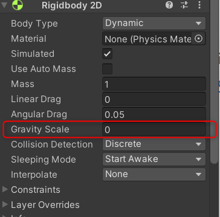

Physique 01 : Utiliser le moteur de physique
Élément de compétence ciblé
00SW - 4 : Programmer la logique du jeu ou de la simulation
Habiletés
- Programmer les comportements des éléments graphiques
- Utiliser les moteurs de jeu ou de simulation
Reprendre le projet
Le projet entammé dans la section Mouvement comporte le joueur et son déplacement.
Pour développer le projet des astéroïdes seront ajoutés pour implémenter les collisions entre le joueur et les obstacles.
Commencer par ouvrir le projet existant.
Créer un Prefab
La conception orientée objet est omniprésente dans le monde du jeu vidéo. Les moteurs ont chacun leur représentation d'un objet du jeu et un moyen de les rendres réutilisables faciblement.
Un Prefab dans l'environnement Unity est l'équivalent d'une classe dans notre environnement de programmation.
Le Prefab contient toutes les propriétés d'un ou plusieurs GameObjects et ses composantes.
Lorsqu'un Prefab est utilisé dans une scène, il s'agit en fait d'une instance de ce Prefab.
Cette technique est généralement utilisée pour : - Les items de l'environnement (ex : fontaines, arbres, lampadaires). - Les personnages autres que le joueur. - Les projectiles - Le personnage du joueur (facilite la modification et les changements de scènes/niveaux)
En pratique
- Créer le dossier Prefabs dans le dossier Assets de l'explorateur de projet.
- Localiser les ressources pour les astéroïdes dans le dossier 2D Space Kit > Asteroids.
- Créer un nouveau GameObject basé sur un des astéroïdes et le placer dans la partie droite de la zone de jeu (cadre blanc de la caméra).

- Sélectionner le dossier Prefabs dans l'explorateur de Projet.
- Glisser le GameObject astéroïde de l'explorateur de hiérarchie dans le dossier Prefabs.
- Un nouveau prefab du même nom est créé. Remarque l'icône en forme de cube bleu, indiquant qu'il s'agit d'un Prefab.
- Supprimer le GameObject pour l'astéroïde de la scène et le remplacer par le Prefab.
- Remarquer que le Prefab apparaît au même coordonées que le GameObject original lorsqu'on le grlisse dans l'inspecteur de hiérarchie.
- Sauvegarder et tester la scène.
Modifier un prefab
L'éditeur de prefabs donne accès au propriétés et composantes. Les modifications apportées seront réflétées sur toutes les instances de celui-ci.
En pratique
- Dans le dossier Prefabs double cliquer sur le prefab de l'astéroïde.
- S'assurer que la sauvegarde automatique est activée.
- Modifier la position pour X = 0, Y = 0, Z = 0.
- Quitter l'éditeur en cliquant sur Scènes ou la flèche à gauche de la fenêtre de Hiérarchie.

- Remarquer que la position du prefab dans la scène a changé.
- Il est préférable que le GameObject à la racine d'un prefab soit à la postion 0,0,0 pour éviter des comportements inattendus.
RigidBody2D
La composante RigidBody2D intègre l'objet relié au calcul de physique de Unity. Il est nécessaire pour faire réagir le GameObject à la gravité, la friction, etc...
En pratique
Ajouter RigidBody2D au prefab
- Ouvrir l'éditeur de prefab pour l'astéroïde.
- Utiliser le bouton Add Component de l'inspecteur pour ajouter un RigidBody2D (Physics2D > RigidBody2d).
- Fermer l'éditeur et tester le jeu.
- Remarquer que l'astéroïde "tombe" comme s'il y avait de la gravité.
Ajuster les propriétés du RigidBody2D
- Dans l'éditeur de prefab, ajuster la propriété Gravity Scale à 0

- Tester la scène de nouveau, l'astéroïde reste en place.
Collider2D
La composante RigidBody2D est nécessaire à la physique mais le Collider2D est nécessaire à la détection et implémentation des collisions.
La forme du Collider2D (Rectangle, Capsule, Cercle, etc...) est choisie en fonction de la forme du GameObject, celle qui s'en approche le plus.
En pratique
Compléter l'astéroïde
- Ouvrir l'éditeur pour le prefab de l'astéroïde.
- RAPPEL : Ne pas oublier de garder la case Auto Save cochée.
- Utiliser l'inspecteur pour ajouter la composante en cercle de Collider2D (trouver avec la barre de recherche du bouton Add Component).
- Le cercle est la forme la plus similaire à l'astéroïde mais il risque d'y avoir des imperfections.
- Au besoin cliquer sur le bouton Edit Collider de la composante et ajuster la forme.
- Quitter l'éditeur.
Configurer le joueur
-
Utiliser les techniques précédentes pour transformer le Joueur en Prefab et le préparer aux collisions.
-
Une fois le joueur configuré, tester la scène et s'assurer que le joueur ne passe plus au travers de l'astéroïde.
Ajouter une contrainte
- Remarquer que la collision cause une rotation du joueur.
- Ouvrir l'éditeur de prefab pour le joueur.
- Dans l'inspecteur localiser et développer la section Constraints pour la composante RigiBody2D.
- Cocher la case Freeze Rotation.
- Fermer l'éditeur et tester la scène.
La méthode FixedUpdate
Les calculs de physique doivent être effectués à interval régulier pour simuler adéquatement la gravité, la firction, les collisions, les rebonds, etc...
Pour atteindre cet objectif, Unity implémente une mise à jour à interval fixe qui calcul les effets de la physique sur les GameObjects qui comportent un RigidBody.
De son côté le développeur doit modifier son traitement des déplacements et interactions entre les GameObjects. Au lieu de programmer le déplacement par la modification des propriétés du Transform, il utilise les propriétés du RigidBody.
Pour exploiter correctement le système Unity les boucles Update et FixedUpdate ont chacunes leurs responsabilités.
Update()
- Lire les intéractions de l'utilisateur au clavier
- Implémenter la logique de jeux
- Gérer les compte à rebours et les chronomètres
- Déplacer des objets qui ne sont pas liés à la physique
FixedUpdate()
- Appliquer les forces, les vélocités et autre calculs liés à la physique
- Modifier les propriétés des RigidBody
En pratique
Modifier le script
- Dans le dossiers des scripts, dupliquer le script de déplacement JoueurCtrl (Menu Edit > Duplicate ou CTRL + D).
- Renommer le script JoueurCtrlPhysx et l'ouvrir dans l'éditeur (Double clique)
- Ajouter les attributs privés :
RigidBody2D rigidBody2d;Vector2 mouvement;
- Dans la méthode Start(), récupérer la référence à la composante RigidBody2D
rigidBody2d = GetComponent<Rigidbody2D>();
- Dans la méthode Update(), modifier la lecture de l'état du MvmtAction pour tenir compte du nouvel attribut mouvement
mouvement = MvmtAction.ReadValue<Vector2>();
- Ajouter la méthode
void FixedUpdate() - Calculer la position finale en utilisant celle du RigidBody2D (FixedUpdate)
Vector2 position = (Vector2)rigidBody2d.position + mouvement * vitesse * Time.deltaTime;
- Changer la position du RigidBody2D avec la méthode MovePosition()
rigidBody2d.MovePosition(position);
- Sauvegarder les modification et fermer l'éditeur de code
Finaliser le mouvement avec physique
- Ouvrir l'éditeur pour le Prefab du joueur.
- Enlever le script original.
- Ajouter le nouveau script.
- Configurer MvmtAction comme vu dans la section sur le mouvement.
- Fermer l'éditeur et tester la scène.
Références et approfondissement
Aller plus loin
- Créer 1 autre prefab d'astéroïde.
- Déposer quelques instances d'astéroïdes dans la scène.
- Créer 4 murs autour de l'aire de jeu, utiliser des Collider2D pour empêcher les objets de sortir.
- l'étape précédente demande un peu de recherche!